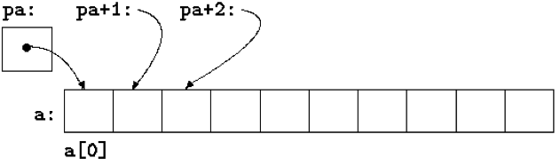

IIC2344 - Clase IV
Programación en lenguaje C - parte II
José Luis Honorato L.
jlhonora@ing.puc.cl
Punteros
- Un puntero es una variable que contiene la dirección en memoria de otra variable, estructura o función
- El tamaño del puntero debiera ser capaz de representar toda dirección de memoria.
- msp430f5529: 128 KB de flash, punteros de qué tamaño?
- El compilador que estamos usando es de 16 bits (en su versión estable)
- Programas de máximo 64 kB
Punteros
int c = 1;
int * p = &c; // 'p' es un puntero a int, es la dirección de 'c'
c = *p; // 'c' es el contenido de donde apunta 'p'
p++; // Incrementa el puntero
c puede ser de cualquier tamaño- El tipo por defecto para punteros es
void *, pero éstos no se pueden de-referenciar
Punteros y arreglos
- En C, punteros y arreglos están muy relacionados
int a[10]; // Definimos un arreglo de 10 objetos
int * pa = &a[0]; // Puntero a la primera posición de 'a'
Avanzar en el índice del arreglo es equivalente a incrementar el puntero

Punteros y arreglos
- En palabras simples,
*(pa + 1) es equivalente a a[1]
pa = &a[0] es equivalente a pa = a- Una diferencia: el puntero es una variable, el arreglo no.
a++ es ilegal
Punteros y arreglos
- Cómo pasamos arreglos como argumentos a funciones?
// Retorna la suma de los elementos del arreglo
int arr_sum(int len, int * my_array) {
int sum = 0
int n;
for(n = 0; n < len; n++)
sum += *my_array++; // Se de-referencia y luego se incrementa la posición
return sum;
}
Podríamos usar un sub-conjunto del arreglo sin problemas, pasandolo como pa + 2, por ejemplo.
Punteros y arreglos
- Funciones comunes en C:
malloc y free
- Reservan un espacio de memoria volátil y lo liberan, respectivamente.
- No es realmente necesario en microcontroladores, su uso no es recomendable
Strings
- El string:
"Hello World!" es un arreglo de caracteres
- El arreglo termina con el caracter
null, o 0 en ASCII
- Por esto, el espacio en memoria es 1
char más que la secuencia de caracteres
Strings
char a[] = "string"; // Arreglo
char *p = "string"; // Puntero a arreglo constante
En el segundo caso el arreglo no necesariamente se escribe en memoria
Los resultados son inciertos si se quiere modificar el contenido
Nota: el arreglo a es de largo 7
Strings
// Copia el contenido de 't' a 's'
void strcpy(char *s, const char *t) {
while((*s++ = *t++) != '\0');
}
El caracter '\0' es usado como término del string
La función incluso copia este caracter
Este tipo de funciones limita el uso para arreglos, donde la ocurrencia de un '\0' puede ser frecuente
Aún mas prolijo:
void strcpy(char *s, const char *t) {
while(*s++ = *t++);
}
No es una forma segura de copiar strings.
Strings
- Funciones para el manejo de strings:
string.h
- Algunas comunes:
strcat, strcmp, memcpy, entre otras
Arreglos de punteros
- Arreglos de punteros: punteros a punteros
- Los punteros son variables, por lo que pueden ser almacenados en arreglos
- Uso: matrices, listado de strings, entre otros
- Muy útiles para sorting de strings, por ejemplo. Se mueve el puntero y no todo el arreglo
Punteros a funciones
- Si bien las funciones no son variables igual se pueden definir punteros a ellas
- Estos punteros a funciones se pueden guardar en arreglos, pasar a funciones, ser retornados por funciones, etc.
- Aplicaciones: sistemas de tareas, ordenar valores según calculos de cierta función
Estructuras
- Colección de una o más variables agrupadas en un solo nombre
- Parecido a un objeto pero sin métodos (aunque igual se podrían definir punteros a funciones)
- Útiles en programas grandes
- Ejemplo:
typedef struct point {
int x;
int y;
} point;
point p1;
void init() {
p1.x = 1;
p1.y = -1;
}
Estructuras
- En general, éstas contienen bastante información, por lo cual es mejor pasarlas a una función como punteros.
- Un arreglo de punteros de estructuras asigna tanto espacio en memoria como sea necesario para alojar la estructura. Expresiones como
p++ son válidas
- El método
sizeof retorna el tamaño de un elemento
- Para acceder a elementos de un puntero a estructura debemos de-referenciar primero,
(*p).x
- Con el operador
p->x se de-referencia y se accede al elemento sin anteponer *